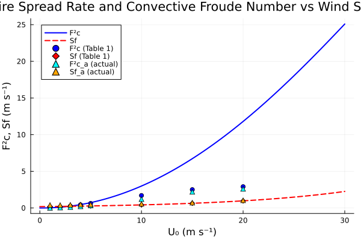
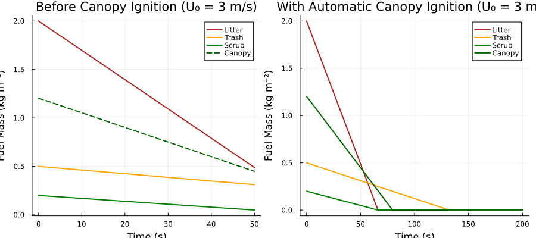
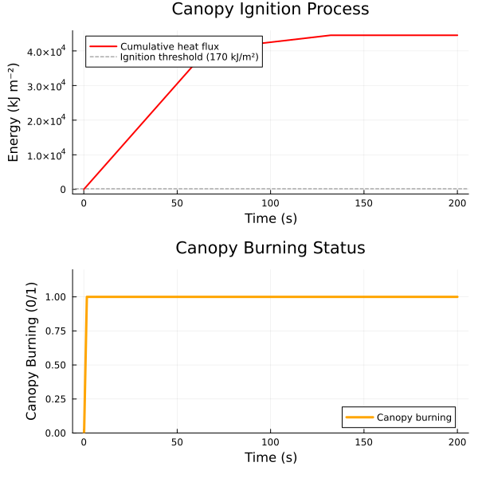
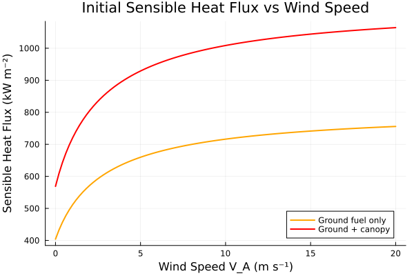
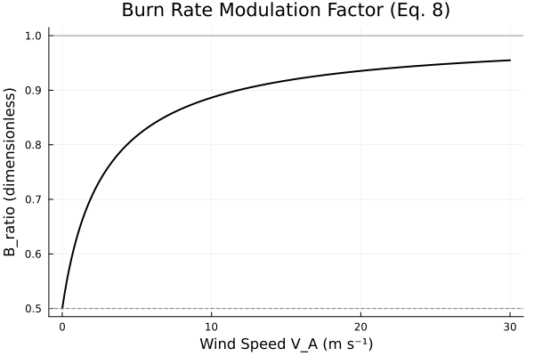
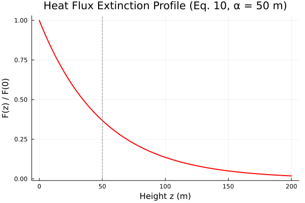
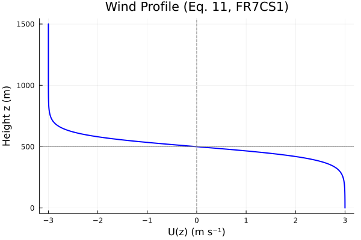

Clark et al. (1996) Coupled Atmosphere-Fire Model
Overview
This module implements the fire model component of the coupled atmosphere-fire model described by Clark et al. (1996). The model simulates fuel consumption and heat flux generation for a simple dry eucalyptus forest fire, using the McArthur empirical fire spread formula (Noble et al., 1980).
The model is designed to study the coupling between fire dynamics and atmospheric circulations, characterized by the square of the convective Froude number, $F_c^2$. Small $F_c^2$ indicates strong coupling between fire and atmosphere; large $F_c^2$ indicates weak coupling where wind dominates.
The fire model tracks four fuel types — litter, trash, scrub, and canopy — with corresponding burn rates and heat flux outputs. It includes an oxygen limitation factor ($B_{ratio}$) that modulates burn rates at low wind speeds, and computes both sensible and latent heat fluxes from combustion. The canopy ignites automatically when the cumulative ground heat flux exceeds 170 kJ/m² as specified in the paper.
Reference: Clark, T.L., Jenkins, M.A., Coen, J.L., and Packham, D.R. (1996). A Coupled Atmosphere-Fire Model: Role of the Convective Froude Number and Dynamic Fingering at the Fireline. Int. J. Wildland Fire, 6(4), 177-190.
WildlandFire.Clark1996FireSpread — Function
Clark1996FireSpread(; name=:Clark1996FireSpread)Create a coupled atmosphere-fire model component implementing the fire spread rate and fuel consumption equations from Clark et al. (1996).
This implements a simple dry eucalyptus forest fire model designed to study the coupling between fire dynamics and atmospheric circulations. The model uses the McArthur empirical fire spread formula (Noble et al., 1980) to compute fire spread rates as a function of wind speed, and tracks fuel consumption for four fuel types (litter, trash, scrub, and canopy) with corresponding heat flux outputs.
Model Description
The fire spread rate follows the McArthur formula (Eq. 9):
\[S_f = S_a \cdot \exp(0.08424 \cdot |\vec{V}_A|)\]
where $S_a = 0.18$ m/s is the backing fire speed and $|\vec{V}_A|$ is the wind speed at 15 m above ground level.
The burn rates are modulated by a ratio $B_{ratio}$ (Eq. 8) that accounts for oxygen limitation at low wind speeds:
\[B_{ratio} = \sqrt{\frac{|\vec{V}_A| + 1}{|\vec{V}_A| + 4}}\]
Each fuel type (litter, trash, scrub, canopy) is consumed at its nominal burn rate multiplied by $B_{ratio}$. The sensible heat flux is computed from the combustion coefficient $H_c = 1.7 \times 10^7$ J/kg applied to the total fuel burn rate, with 3% of the sensible heat going to evaporate moisture in the ground fuel. The latent heat flux accounts for both the evaporated fuel moisture and the water vapor produced by cellulose combustion (56% of dry fuel mass).
Canopy Ignition
The canopy automatically ignites when the cumulative ground heat flux exceeds a threshold of 170 kJ/m² (as stated on p. 180 of Clark et al., 1996). Before ignition, only ground fuels (litter, trash, scrub) burn. The model tracks the cumulative heat energy released and triggers canopy burning once the threshold is exceeded.
Arguments
name: System name (default:Clark1996FireSpread)
Reference
Clark, T.L., Jenkins, M.A., Coen, J.L., and Packham, D.R. (1996). A Coupled Atmosphere-Fire Model: Role of the Convective Froude Number and Dynamic Fingering at the Fireline. Int. J. Wildland Fire, 6(4), 177-190.
Noble, I.R., Bary, G.A.V., and Gill, A.M. (1980). McArthur's fire-danger meters expressed as equations. Aust. J. Ecol., 5, 201-203.
Walker, J. (1981). Fuel dynamics in Australian vegetation. In Fire in the Australian Biota, ed. A.M. Gill, R.H. Groves, and I.R. Noble. Australian Academy of Science, 582 pp.
Example
using WildlandFire, ModelingToolkit, DynamicQuantities, OrdinaryDiffEqDefault
using ModelingToolkit: t, D
sys = Clark1996FireSpread()
compiled = mtkcompile(sys)
# Set initial fuel masses and run at wind speed of 3 m/s
prob = ODEProblem(compiled,
[compiled.M_litter => 2.0, compiled.M_trash => 0.5,
compiled.M_scrub => 0.2, compiled.M_canopy => 1.2,
compiled.Q_cumulative => 0.0],
(0.0, 120.0),
[compiled.V_A => 3.0])
sol = solve(prob)
# Canopy ignition occurs automatically when cumulative heat flux reaches 170 kJ/m²WildlandFire.Clark1996HeatFluxProfile — Function
Clark1996HeatFluxProfile(; name=:Clark1996HeatFluxProfile)Compute the vertical profile of heat fluxes from the fire using a simple extinction depth formulation (Eq. 10, Clark et al., 1996).
The sensible and latent heat fluxes decay exponentially with height:
\[F_s(\vec{x}, t) = F_s(x, y, 0, t) \cdot \exp(-z/\alpha)\]
\[F_l(\vec{x}, t) = F_l(x, y, 0, t) \cdot \exp(-z/\alpha)\]
where $\alpha = 50$ m is the e-folding extinction depth.
Reference
Clark, T.L., Jenkins, M.A., Coen, J.L., and Packham, D.R. (1996). A Coupled Atmosphere-Fire Model: Role of the Convective Froude Number and Dynamic Fingering at the Fireline. Int. J. Wildland Fire, 6(4), 177-190.
WildlandFire.Clark1996ConvectiveFroudeNumber — Function
Clark1996ConvectiveFroudeNumber(; name=:Clark1996ConvectiveFroudeNumber)Compute the square of the convective Froude number (Eq. 1, Clark et al., 1996), a diagnostic parameter that characterizes the coupling strength between fire and atmospheric dynamics.
\[F_c^2 = \frac{(U - S_f)^2}{g \cdot \frac{\Delta\theta}{\bar{\theta}} \cdot W_f}\]
Large $F_c^2$ indicates weak coupling (wind dominates); small $F_c^2$ indicates strong coupling (fire-induced buoyancy dominates).
Reference
Clark, T.L., Jenkins, M.A., Coen, J.L., and Packham, D.R. (1996). A Coupled Atmosphere-Fire Model: Role of the Convective Froude Number and Dynamic Fingering at the Fireline. Int. J. Wildland Fire, 6(4), 177-190.
WildlandFire.Clark1996WindProfile — Function
Clark1996WindProfile(; name=:Clark1996WindProfile)Compute the hyperbolic tangent wind profile used in the FR7CS1 experiment (Eq. 11, Clark et al., 1996).
\[U(z) = 3 - 3 \left[1 + \tanh\left(\frac{z - 500}{100}\right)\right]\]
This profile gives $U \approx +3$ m/s near the surface, reverses sign at $z = 500$ m, and is asymptotic to $-3$ m/s aloft. It allows fire-induced convective motions to propagate upstream and re-enter the boundary layer flow that ventilates the fire.
Reference
Clark, T.L., Jenkins, M.A., Coen, J.L., and Packham, D.R. (1996). A Coupled Atmosphere-Fire Model: Role of the Convective Froude Number and Dynamic Fingering at the Fireline. Int. J. Wildland Fire, 6(4), 177-190.
Implementation
The fire model consists of four components:
Clark1996FireSpread: Main fire model with fuel consumption ODEs and heat flux computationClark1996HeatFluxProfile: Vertical extinction profile for heat fluxes (Eq. 10)Clark1996ConvectiveFroudeNumber: Diagnostic coupling parameter (Eq. 1)Clark1996WindProfile: Hyperbolic tangent wind profile for FR7CS1 experiment (Eq. 11)
State Variables
using DataFrames, ModelingToolkit, Symbolics, DynamicQuantities
using WildlandFire
sys = Clark1996FireSpread()
vars = unknowns(sys)
units = [ModelingToolkit.get_unit(v) for v in vars]
DataFrame(
:Name => [string(Symbolics.tosymbol(v, escape = false)) for v in vars],
:Units => [isnothing(u) ? "dimensionless" : string(u) for u in units],
:Description => [ModelingToolkit.getdescription(v) for v in vars]
)| Row | Name | Units | Description |
|---|---|---|---|
| String | String | String | |
| 1 | M_litter | 1.0 m⁻² kg | Litter fuel mass remaining |
| 2 | M_trash | 1.0 m⁻² kg | Trash fuel mass remaining |
| 3 | M_scrub | 1.0 m⁻² kg | Scrub fuel mass remaining |
| 4 | Q_cumulative | 1.0 kg s⁻² | Cumulative ground heat flux for canopy ignition |
| 5 | M_canopy | 1.0 m⁻² kg | Dry canopy fuel mass remaining |
| 6 | B_ratio | 1.0 | Burn rate modulation factor (dimensionless) |
| 7 | S_f | 1.0 m s⁻¹ | Forward fire spread rate (McArthur) |
| 8 | ground_burn_rate | 1.0 m⁻² kg s⁻¹ | Total ground fuel burn rate |
| 9 | canopy_burning | 1.0 | Whether canopy is burning (1=yes, 0=no) (dimensionless) |
| 10 | total_burn_rate | 1.0 m⁻² kg s⁻¹ | Total fuel burn rate (ground + canopy) |
| 11 | F_s | 1.0 kg s⁻³ | Sensible heat flux at surface from fire |
| 12 | F_l | 1.0 kg s⁻³ | Latent heat flux at surface from fire |
Parameters
params = parameters(sys)
punits = [ModelingToolkit.get_unit(p) for p in params]
DataFrame(
:Name => [string(Symbolics.tosymbol(p, escape = false)) for p in params],
:Units => [isnothing(u) ? "dimensionless" : string(u) for u in punits],
:Description => [ModelingToolkit.getdescription(p) for p in params]
)| Row | Name | Units | Description |
|---|---|---|---|
| String | String | String | |
| 1 | V_A | 1.0 m s⁻¹ | Tracer-advecting wind speed at 15 m AGL |
| 2 | one_vel | 1.0 m s⁻¹ | Reference velocity for non-dimensionalization |
| 3 | four_vel | 1.0 m s⁻¹ | Reference velocity for O2 limitation |
| 4 | k_spread | 1.0 m⁻¹ s | McArthur spread rate coefficient |
| 5 | S_a | 1.0 m s⁻¹ | Backing/base fire spread rate (McArthur) |
| 6 | eps_fuel | 1.0 m⁻² kg | Small epsilon for fuel comparison |
| 7 | one_dimless | 1.0 | Dimensionless one |
| 8 | zero_dimless | 1.0 | Dimensionless zero |
| 9 | R_litter | 1.0 m⁻² kg s⁻¹ | Litter nominal burn rate |
| 10 | R_trash | 1.0 m⁻² kg s⁻¹ | Trash nominal burn rate |
| 11 | R_scrub | 1.0 m⁻² kg s⁻¹ | Scrub nominal burn rate |
| 12 | H_c | 1.0 m² s⁻² | Combustion coefficient |
| 13 | f_evap | 1.0 | Fraction of sensible heat for moisture evaporation (dimensionless) |
| 14 | Q_canopy_threshold | 1.0 kg s⁻² | Cumulative heat flux threshold for canopy ignition |
| 15 | R_canopy | 1.0 m⁻² kg s⁻¹ | Dry canopy fuel nominal burn rate |
| 16 | f_water | 1.0 | Fraction of dry fuel mass converted to water vapor (dimensionless) |
| 17 | L_v | 1.0 m² s⁻² | Latent heat of vaporization of water |
Equations
equations(sys)\[ \begin{align} \frac{\mathrm{d} ~ \mathtt{M\_litter}\left( t \right)}{\mathrm{d}t} &= - \mathtt{R\_litter} ~ \mathtt{B\_ratio}\left( t \right) ~ ifelse\left( \mathtt{M\_litter}\left( t \right) > \mathtt{eps\_fuel}, \mathtt{one\_dimless}, \mathtt{zero\_dimless} \right) \\ \frac{\mathrm{d} ~ \mathtt{M\_trash}\left( t \right)}{\mathrm{d}t} &= - \mathtt{R\_trash} ~ ifelse\left( \mathtt{M\_trash}\left( t \right) > \mathtt{eps\_fuel}, \mathtt{one\_dimless}, \mathtt{zero\_dimless} \right) ~ \mathtt{B\_ratio}\left( t \right) \\ \frac{\mathrm{d} ~ \mathtt{M\_scrub}\left( t \right)}{\mathrm{d}t} &= - \mathtt{R\_scrub} ~ \mathtt{B\_ratio}\left( t \right) ~ ifelse\left( \mathtt{M\_scrub}\left( t \right) > \mathtt{eps\_fuel}, \mathtt{one\_dimless}, \mathtt{zero\_dimless} \right) \\ \frac{\mathrm{d} ~ \mathtt{Q\_cumulative}\left( t \right)}{\mathrm{d}t} &= \mathtt{H\_c} ~ \left( - \mathtt{f\_evap} + \mathtt{one\_dimless} \right) ~ \mathtt{ground\_burn\_rate}\left( t \right) \\ \frac{\mathrm{d} ~ \mathtt{M\_canopy}\left( t \right)}{\mathrm{d}t} &= - \mathtt{R\_canopy} ~ ifelse\left( \mathtt{M\_canopy}\left( t \right) > \mathtt{eps\_fuel}, \mathtt{one\_dimless}, \mathtt{zero\_dimless} \right) ~ \mathtt{B\_ratio}\left( t \right) ~ \mathtt{canopy\_burning}\left( t \right) \\ \mathtt{B\_ratio}\left( t \right) &= \sqrt{\frac{\mathtt{one\_vel} + \left|\mathtt{V\_A}\right|}{\mathtt{four\_vel} + \left|\mathtt{V\_A}\right|}} \\ \mathtt{S\_f}\left( t \right) &= min\left( \mathtt{S\_a} ~ e^{\mathtt{k\_spread} ~ \left|\mathtt{V\_A}\right|}, \left|\mathtt{V\_A}\right| \right) \\ \mathtt{canopy\_burning}\left( t \right) &= ifelse\left( \mathtt{Q\_cumulative}\left( t \right) > \mathtt{Q\_canopy\_threshold}, \mathtt{one\_dimless}, \mathtt{zero\_dimless} \right) \\ \mathtt{ground\_burn\_rate}\left( t \right) &= \mathtt{R\_litter} ~ \mathtt{B\_ratio}\left( t \right) ~ ifelse\left( \mathtt{M\_litter}\left( t \right) > \mathtt{eps\_fuel}, \mathtt{one\_dimless}, \mathtt{zero\_dimless} \right) + \mathtt{R\_scrub} ~ \mathtt{B\_ratio}\left( t \right) ~ ifelse\left( \mathtt{M\_scrub}\left( t \right) > \mathtt{eps\_fuel}, \mathtt{one\_dimless}, \mathtt{zero\_dimless} \right) + \mathtt{R\_trash} ~ ifelse\left( \mathtt{M\_trash}\left( t \right) > \mathtt{eps\_fuel}, \mathtt{one\_dimless}, \mathtt{zero\_dimless} \right) ~ \mathtt{B\_ratio}\left( t \right) \\ \mathtt{total\_burn\_rate}\left( t \right) &= \mathtt{ground\_burn\_rate}\left( t \right) + \mathtt{R\_canopy} ~ ifelse\left( \mathtt{M\_canopy}\left( t \right) > \mathtt{eps\_fuel}, \mathtt{one\_dimless}, \mathtt{zero\_dimless} \right) ~ \mathtt{B\_ratio}\left( t \right) ~ \mathtt{canopy\_burning}\left( t \right) \\ \mathtt{F\_s}\left( t \right) &= \mathtt{H\_c} ~ \left( - \mathtt{f\_evap} + \mathtt{one\_dimless} \right) ~ \mathtt{total\_burn\_rate}\left( t \right) \\ \mathtt{F\_l}\left( t \right) &= \mathtt{H\_c} ~ \mathtt{f\_evap} ~ \mathtt{total\_burn\_rate}\left( t \right) + \mathtt{L\_v} ~ \mathtt{f\_water} ~ \mathtt{total\_burn\_rate}\left( t \right) \end{align} \]
Analysis
Fire Spread Rate vs Wind Speed (Figure 3)
The McArthur fire spread rate (Eq. 9) and convective Froude number squared (Eq. 1) are plotted as functions of the ambient wind speed $U_0$. The spread rate increases exponentially with wind speed according to the McArthur formula. The convective Froude number squared increases more rapidly, indicating weakening fire-atmosphere coupling at higher wind speeds.
The markers correspond to the experimental values from Table 1 of Clark et al. (1996).
using Plots
# McArthur spread rate — Eq. 9
S_a = 0.18 # m/s
k_spread = 0.08424 # s/m
U_0_range = range(0, 30, length=200)
S_f_calc = [S_a * exp(k_spread * U) for U in U_0_range]
# Convective Froude number squared — Eq. 1
# Back-calculate g*Δθ/θ̄*W_f from Table 1: at U_0=3, S_f=0.23, F_c²=0.25
g_delta_W = (3.0 - 0.23)^2 / 0.25
F_c_sq_calc = [(U - S_a * exp(k_spread * U))^2 / g_delta_W for U in U_0_range]
# Table 1 data points
U_0_table = [1.0, 2.0, 3.0, 4.0, 5.0, 10.0, 15.0, 20.0]
S_f_table = [0.20, 0.21, 0.23, 0.25, 0.27, 0.42, 0.64, 0.97]
F_c_sq_table = [0.025, 0.11, 0.25, 0.43, 0.62, 1.7, 2.5, 2.9]
S_fa_table = [0.40, 0.39, 0.43, 0.46, 0.47, 0.56, 0.72, 1.04]
F_ca_sq_table = [0.0069, 0.051, 0.12, 0.21, 0.33, 1.2, 2.2, 2.6]
p = plot(collect(U_0_range), F_c_sq_calc, label="F²c", lw=2, color=:blue,
xlabel="U₀ (m s⁻¹)", ylabel="F²c, Sf (m s⁻¹)",
title="Fire Spread Rate and Convective Froude Number vs Wind Speed")
plot!(p, collect(U_0_range), S_f_calc, label="Sf", lw=2, color=:red, ls=:dash)
scatter!(p, U_0_table, F_c_sq_table, label="F²c (Table 1)", color=:blue, marker=:circle)
scatter!(p, U_0_table, S_f_table, label="Sf (Table 1)", color=:red, marker=:diamond)
scatter!(p, U_0_table, F_ca_sq_table, label="F²c_a (actual)", color=:cyan, marker=:utriangle)
scatter!(p, U_0_table, S_fa_table, label="Sf_a (actual)", color=:orange, marker=:utriangle)
p
Fuel Consumption Time Series and Automatic Canopy Ignition
Simulation of fuel consumption for the standard experiment conditions (FIR7CR: $U_0 = 3$ m/s, single 420 m fire line). Ground fuels (litter, trash, scrub) are consumed at different rates, with litter being the fastest. The canopy ignites automatically when the cumulative ground heat flux reaches 170 kJ/m² as specified on p. 180 of Clark et al. (1996).
using OrdinaryDiffEqDefault
sys = Clark1996FireSpread()
compiled = mtkcompile(sys)
# Short simulation - before canopy ignition
prob_short = ODEProblem(compiled,
[compiled.M_litter => 2.0,
compiled.M_trash => 0.5,
compiled.M_scrub => 0.2,
compiled.M_canopy => 1.2,
compiled.Q_cumulative => 0.0],
(0.0, 50.0), # Short duration
[compiled.V_A => 3.0])
sol_short = solve(prob_short)
# Full simulation - with automatic canopy ignition
prob_full = ODEProblem(compiled,
[compiled.M_litter => 2.0,
compiled.M_trash => 0.5,
compiled.M_scrub => 0.2,
compiled.M_canopy => 1.2,
compiled.Q_cumulative => 0.0],
(0.0, 200.0),
[compiled.V_A => 3.0])
sol_full = solve(prob_full)
# Plot 1: Short simulation before canopy ignition
p1 = plot(sol_short.t, sol_short[compiled.M_litter], label="Litter", lw=2, color=:brown,
xlabel="Time (s)", ylabel="Fuel Mass (kg m⁻²)",
title="Before Canopy Ignition (U₀ = 3 m/s)")
plot!(p1, sol_short.t, sol_short[compiled.M_trash], label="Trash", lw=2, color=:orange)
plot!(p1, sol_short.t, sol_short[compiled.M_scrub], label="Scrub", lw=2, color=:green)
plot!(p1, sol_short.t, sol_short[compiled.M_canopy], label="Canopy", lw=2, color=:darkgreen, ls=:dash)
# Plot 2: Full simulation with automatic canopy ignition
p2 = plot(sol_full.t, sol_full[compiled.M_litter], label="Litter", lw=2, color=:brown,
xlabel="Time (s)", ylabel="Fuel Mass (kg m⁻²)",
title="With Automatic Canopy Ignition (U₀ = 3 m/s)")
plot!(p2, sol_full.t, sol_full[compiled.M_trash], label="Trash", lw=2, color=:orange)
plot!(p2, sol_full.t, sol_full[compiled.M_scrub], label="Scrub", lw=2, color=:green)
plot!(p2, sol_full.t, sol_full[compiled.M_canopy], label="Canopy", lw=2, color=:darkgreen)
plot(p1, p2, layout=(1,2), size=(900, 400))
Canopy Ignition Process
The following plot shows the cumulative heat flux and canopy ignition timing. The canopy ignites automatically when the cumulative heat flux from ground fuels reaches 170 kJ/m² (shown as the horizontal dashed line).
# Create plot showing cumulative heat flux and canopy burning status
p3 = plot(sol_full.t, sol_full[compiled.Q_cumulative] ./ 1000, label="Cumulative heat flux",
lw=2, color=:red, xlabel="Time (s)", ylabel="Energy (kJ m⁻²)",
title="Canopy Ignition Process")
hline!(p3, [170.0], ls=:dash, color=:gray, label="Ignition threshold (170 kJ/m²)")
# Add secondary y-axis for canopy burning indicator
p4 = plot(sol_full.t, sol_full[compiled.canopy_burning], label="Canopy burning",
lw=3, color=:orange, xlabel="Time (s)", ylabel="Canopy Burning (0/1)",
title="Canopy Burning Status", ylims=(0, 1.2))
plot(p3, p4, layout=(2,1), size=(600, 600))
Sensible Heat Flux vs Wind Speed
The sensible heat flux at the surface varies with wind speed through the burn rate modulation factor $B_{ratio}$ (Eq. 8). Higher wind speeds increase $B_{ratio}$ toward 1.0, increasing the effective burn rate and heat release.
V_A_range = range(0, 20, length=100)
H_c = 1.7e7 # J/kg
f_evap = 0.03
R_ground = 0.040 + 0.005 + 0.004
R_canopy_rate = 0.020
B_ratio_vals = [sqrt((v + 1.0) / (v + 4.0)) for v in V_A_range]
F_s_ground = [(1.0 - f_evap) * H_c * R_ground * b / 1000 for b in B_ratio_vals]
F_s_total = [(1.0 - f_evap) * H_c * (R_ground + R_canopy_rate) * b / 1000 for b in B_ratio_vals]
p = plot(collect(V_A_range), F_s_ground, label="Ground fuel only", lw=2, color=:orange,
xlabel="Wind Speed V_A (m s⁻¹)", ylabel="Sensible Heat Flux (kW m⁻²)",
title="Initial Sensible Heat Flux vs Wind Speed")
plot!(p, collect(V_A_range), F_s_total, label="Ground + canopy", lw=2, color=:red)
p
Burn Rate Modulation Factor
The burn rate ratio $B_{ratio}$ (Eq. 8) models the oxygen limitation effect at low wind speeds. It approaches 0.5 at zero wind and asymptotically approaches 1.0 at high wind speeds.
V_A_range = range(0, 30, length=200)
B_vals = [sqrt((v + 1.0) / (v + 4.0)) for v in V_A_range]
p = plot(collect(V_A_range), B_vals, lw=2, color=:black, legend=false,
xlabel="Wind Speed V_A (m s⁻¹)", ylabel="B_ratio (dimensionless)",
title="Burn Rate Modulation Factor (Eq. 8)")
hline!(p, [0.5], ls=:dash, color=:gray, label="V_A = 0 limit")
hline!(p, [1.0], ls=:dot, color=:gray, label="V_A → ∞ limit")
p
Heat Flux Vertical Profile
The heat flux decays exponentially with height above the fire, with an e-folding depth of $\alpha = 50$ m (Eq. 10). This simple extinction depth formulation parameterizes the effects of radiation and small-scale turbulence.
z_range = range(0, 200, length=100)
alpha = 50.0
decay = [exp(-z / alpha) for z in z_range]
p = plot(collect(z_range), decay, lw=2, color=:red, legend=false,
xlabel="Height z (m)", ylabel="F(z) / F(0)",
title="Heat Flux Extinction Profile (Eq. 10, α = 50 m)")
vline!(p, [50.0], ls=:dash, color=:gray)
p
Wind Profile (Eq. 11, FR7CS1 Experiment)
The hyperbolic tangent wind profile used in the FR7CS1 experiment, which reverses direction with height. This allows fire-induced convective motions to propagate upstream and re-enter the fire ventilation zone.
z_range = range(0, 1500, length=200)
U_z_vals = [3.0 - 3.0 * (1.0 + tanh((z - 500.0) / 100.0)) for z in z_range]
p = plot(U_z_vals, collect(z_range), lw=2, color=:blue,
xlabel="U(z) (m s⁻¹)", ylabel="Height z (m)",
title="Wind Profile (Eq. 11, FR7CS1)", legend=false)
vline!(p, [0.0], ls=:dash, color=:gray)
hline!(p, [500.0], ls=:dot, color=:gray)
p